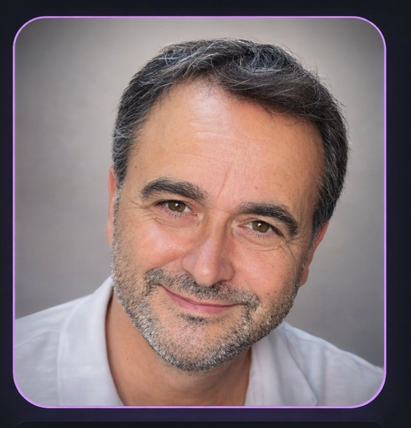

CHI SONOConsulente tecnico e
ricercatore indipendente.
Quasi trent'anni tra sicurezza sul lavoro, tutela ambientale e acustica, con un piede nel rigore professionale e l'altro nella curiosità scientifica.
ContattamiFormazione
-
Laurea in Tecniche di Laboratorio Biomedico
-
Studi in corso: Biologia della Nutrizione Umana
-
Quasi 30 anni di esperienza professionale
Il percorso
Tra consulenza tecnica, formazione e ricerca personale: come si incontrano rigore scientifico e curiosità.
Professione
Lavoro tra sicurezza sul lavoro, tutela ambientale, acustica e prevenzione incendi, trasformando norme e complessità tecniche in soluzioni pratiche: procedure, strumenti operativi e applicazioni.
Competenze
- Sicurezza sul lavoro
- Consulenza ambientale
- Acustica
- Prevenzione incendi
Ricerca personale
Mi appassionano scienza e coscienza, biologia e universo, vita e sistemi complessi. Cerco connessioni, modelli, spiegazioni. E quando serve, costruisco strumenti per rendere tutto più semplice.
Il Codice di Dante
È il mio spazio di esplorazione: un laboratorio dove tecnologia e immaginazione si incontrano. Un punto unico in cui convivono app professionali e progetti virali, con lo stesso obiettivo: creare qualcosa che lasci il segno.